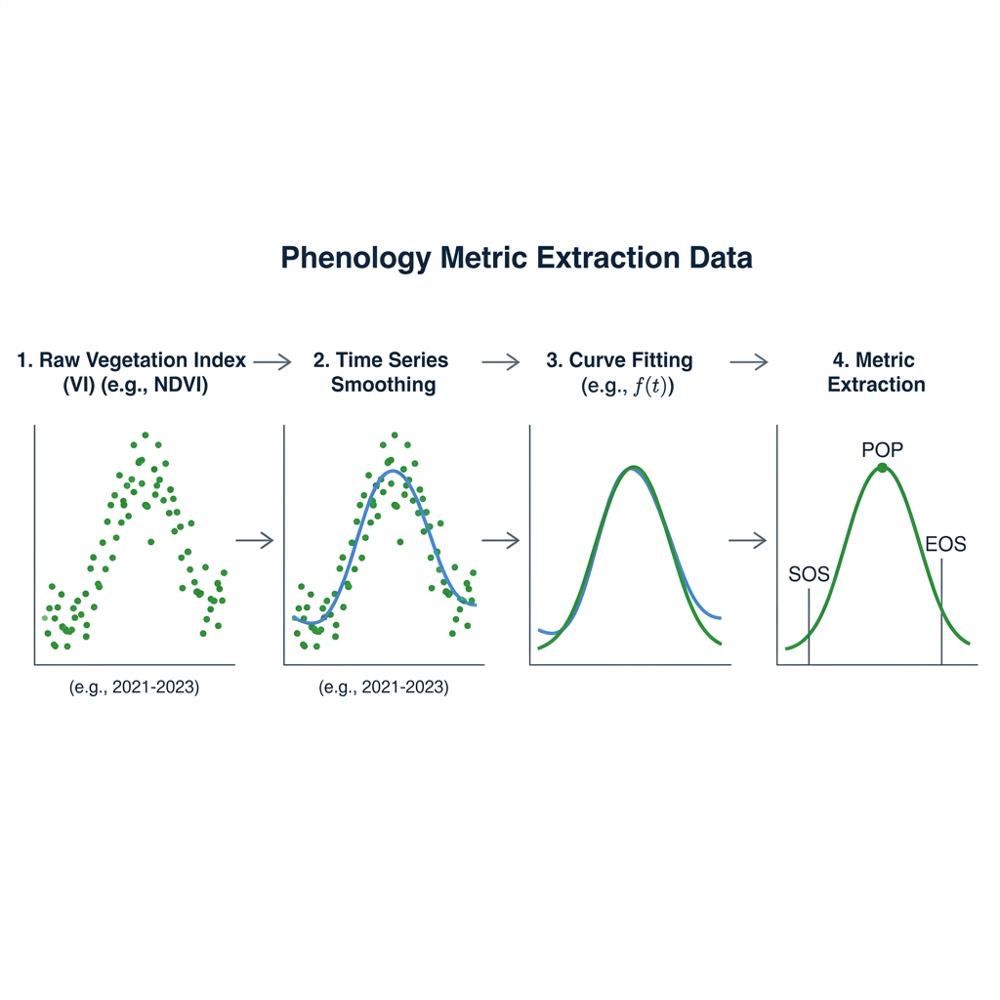

Phenology Extraction
The cdts package features an incredibly fast and highly optimized C++ backend for Phenology Extraction, designed specifically to handle large-scale Earth Observation datasets. This module allows you to monitor and extract cyclical patterns in vegetation dynamics—essential for agriculture, forestry, and climate change studies.
The smoothing, curve-fitting, and multi-method metric-extraction methodology implemented here is based on the R package phenofit (Kong et al., 2022 — see References), reimplemented from scratch in C++ on top of Eigen for sparse linear algebra and OpenMP for native multi-threading. This allows the extraction of land surface phenology metrics from gigabytes — or terabytes, at global scale — of satellite time series with unparalleled speed, bypassing the Python Global Interpreter Lock (GIL).
1. What is Land Surface Phenology?
Phenology is the study of periodic biological events in the animal and plant world as influenced by the environment, especially seasonal variations in temperature and precipitation. In remote sensing, Land Surface Phenology (LSP) refers to the seasonal pattern of variation in vegetated land surfaces observed from satellite imagery.
By analyzing vegetation indices (such as EVI or NDVI) over time, we can extract key phenological metrics:
- SOS (Start of Season): The start of the vegetative cycle (e.g., spring green-up or planting).
- POP (Peak of Season): The moment of maximum vegetative vigor (maximum canopy closure).
- EOS (End of Season): The end of the vegetative cycle (senescence or harvesting).
- LOS (Length of Season): The duration of the growing season, calculated as
EOS - SOS.
These metrics are crucial for mapping crop types, predicting yields, detecting climate-induced shifts in ecosystems, and monitoring double-cropping agricultural systems.
2. The Extraction Workflow
Extracting phenology from noisy, cloud-contaminated satellite time series requires a robust, multi-step mathematical pipeline.

2.1. Time Series Smoothing
Raw satellite data is often noisy due to atmospheric interference, clouds, or sensor errors. The first step is to smooth the curve to extract the general seasonal trend.
- Whittaker Smoother: We use a highly optimized Sparse Matrix implementation of the Whittaker smoother. It balances fidelity to the original data with the smoothness of the resulting curve, controlled by a lambda parameter.
- HANTS (Harmonic Analysis of Time Series): An alternative smoothing method that models the time series using sine and cosine waves (Fourier analysis), which is highly effective at removing cloud gaps.
2.2. Curve Fitting (Levenberg-Marquardt)
Once the general shape of the growing season is identified, we fit a mathematical model to it. This allows us to continuously evaluate the curve at any given day. The optimization is done using the Levenberg-Marquardt non-linear least squares algorithm.
We provide several asymmetric Gaussian and double-logistic functions:
- BECK (Beck et al., 2006): Excellent for general forest and crop phenology.
- ELMORE (Elmore et al., 2012): Handles varying winter backgrounds effectively.
- GU (Gu et al., 2009): Uses an advanced recovery model.
- KLOSTERMAN (Klosterman et al., 2014): Uses analytical geometry to detect transition dates.
- ZHANG (Zhang et al., 2003): A piecewise logistic model.
- AG: Standard Asymmetric Gaussian.
- DL: Standard Double Logistic.
2.3. Metric Extraction Methods
Once the curve is fitted perfectly, how do we define the "Start", "Peak", and "End" of the season? The cdts C++ backend calculates and returns 19 distinct phenological variables simultaneously for every season, covering all major state-of-the-art extraction methodologies at no extra computational cost:
- Threshold Methods (
TRS): TRS2.sos/TRS2.eos: Start and End of Season defined when the curve reaches 20% of its seasonal amplitude.TRS5.sos/TRS5.eos: Start and End of Season defined at 50% amplitude.TRS6.sos/TRS6.eos: Start and End of Season defined at 60% amplitude.- Derivative Method (
DER): DER.sos/DER.eos: Mathematically defined as the points where the rate of change of the curve (the 1st derivative) reaches its local maximum (spring green-up acceleration) and local minimum (senescence deceleration).DER.pos: The exact day of the peak, where the 1st derivative crosses zero.- Gu Method (2nd Derivative):
UD(Upward),SD(Senescence Downward),DD(Downward),RD(Recovery Downward): Key transition points defined by the local maxima and minima of the curve's 2nd derivative.- Zhang Method (Curvature Rate):
Greenup,Maturity,Senescence,Dormancy: Transition dates extracted using the physical curvature formulaK = f'' / (1 + (f')^2)^1.5, searching for local valleys and peaks of the curvature rate.- General:
LOS(Length of Season): Duration of the season in days.POP(Peak of Season): General peak location based on curve shape max values.
3. Practical Example: Processing a Raster (End-to-End)
The cdts package natively integrates with xarray through a custom accessor (.cdts.run_phenology). This abstracts away all the complex array reshaping and memory management, allowing you to process large MODIS/Landsat time series elegantly.
By default, the pipeline automatically maps the continuous days back into calendar DOYs if you pass return_annual=True.
import rioxarray
import numpy as np
import pandas as pd
import cdts # Automatically registers the .cdts accessor in xarray
from cdts._core.phenology import CurveType
# 1. Load the dense time series raster (Shape: Time, Y, X)
ds = rioxarray.open_rasterio('MODIS_EVI_Series.tif')
# 2. Prepare the Time Array (Continuous Day of Year)
dates = pd.date_range(start='2001-01-01', periods=ds.shape[0], freq='16D')
dates_doy = np.array([d.timetuple().tm_yday + (d.year - 2001) * 365 for d in dates], dtype=np.float64)
# 3. Run the Phenology Engine directly on the xarray DataArray
# This leverages Dask internally for parallel out-of-core execution
print("Extracting 19 phenology metrics...")
metrics_da = ds.cdts.run_phenology(
dates=dates_doy,
curve_type=int(CurveType.BECK), # Use Beck's double logistic
max_seasons=25, # Process 25 years of data
whittaker_lambda=10.0, # Whittaker smoothness parameter
apply_whittaker=True, # Apply Whittaker before fitting
min_season_length=7, # A season must last at least 7 days
min_amplitude=0.0,
min_pixel_amplitude=0.1, # Skip dead/water pixels entirely
return_annual=True, # Return variables aligned to calendar Years
base_year=2001,
n_jobs=14 # Use 14 CPU cores (OpenMP)
).compute()
# 4. Save to disk using rioxarray
# metrics_da shape is (metric=19, year=25, y, x).
# We can loop through the 19 variables and export them as 25-band TIF files
metrics_da.rio.write_crs(ds.rio.crs, inplace=True)
for metric_name in metrics_da.metric.values:
# Select the specific metric, resulting in a 3D array (year, y, x)
single_metric_da = metrics_da.sel(metric=metric_name)
# Save a multi-band TIF where each band is a year
filename = f"cdts_{metric_name}.tif"
single_metric_da.rio.to_raster(filename)
print(f"Saved {filename}")
4. Real-World Walkthrough: Detecting Late-Planting Anomalies (Drought Signal) in Soybean Fields
This section walks through a complete, realistic problem end-to-end: an analyst wants to know whether soybean fields in a Mato Grosso municipality (Brazil) show anomalously delayed green-up in a candidate drought year, compared to a multi-year baseline — a common early-warning question for agricultural monitoring and drought impact assessment. Late green-up (a positive SOS anomaly, in days) is a classic remote signal of delayed planting caused by late onset of the rainy season.
The workflow chains three cdts building blocks: build_time_series (STAC ingestion) → regularize_time_series (temporal regularization) → .cdts.run_phenology (metric extraction), all lazy until .compute() is called — so it scales from a single tile to a whole state without changing the code.
Step 1 — Build a multi-year Sentinel-2 cube for the area of interest
import numpy as np
import pandas as pd
import matplotlib.pyplot as plt
import cdts
from cdts import regularize_time_series
from cdts._core.phenology import CurveType
# Multi-year window covering the baseline + the candidate drought year (2021)
cube_raw = cdts.build_time_series(
source="earth_search",
collection="sentinel-2-l2a",
tiles=["21LWH"], # A Sentinel-2 MGRS tile over Mato Grosso cropland
start_date="2019-07-01",
end_date="2022-06-30", # 3 full crop years: 2019/20, 2020/21, 2021/22
bands=["red", "nir"],
apply_cloud_mask=True, # Drops clouds/shadows using the SCL band automatically
)
Step 2 — Compute NDVI and regularize to 16-day composites
Phenology curve-fitting expects a reasonably dense, evenly-spaced time axis — raw STAC revisits are irregular (5–12 days, with cloud gaps). We compute NDVI first (single-band, so method="median" is the right choice — medoid needs a band dimension to compare against) and then regularize:
ndvi_raw = (cube_raw.sel(band="nir") - cube_raw.sel(band="red")) / (
cube_raw.sel(band="nir") + cube_raw.sel(band="red")
)
ndvi_16d = regularize_time_series(ndvi_raw, freq="16D", method="median")
Step 3 — Run the phenology engine across all three crop years at once
# Build the continuous day-numbering the C++ core expects: days since `base_year`-01-01.
dates_pd = pd.to_datetime(ndvi_16d.time.values)
base_year = int(dates_pd.year.min())
dates_doy = np.array(
[d.timetuple().tm_yday + (d.year - base_year) * 365 for d in dates_pd],
dtype=np.float64,
)
n_years = int(dates_pd.year.max()) - base_year + 1
pheno = ndvi_16d.cdts.run_phenology(
dates=dates_doy,
curve_type=int(CurveType.BECK),
max_seasons=n_years, # one slot per calendar year in the window
apply_whittaker=True,
whittaker_lambda=5.0, # a bit looser than default: S2 NDVI is noisier than MODIS
min_season_length=45, # ignore green-ups shorter than ~45 days (noise, not a crop cycle)
min_amplitude=0.15,
min_pixel_amplitude=0.15, # skip forest/water/urban pixels entirely — huge speedup at scale
return_annual=True, # aligns each detected season to a calendar year
base_year=base_year,
n_jobs=-1,
).compute()
Step 4 — Compute the SOS anomaly for the candidate drought year
We use DER.sos (derivative-based Start of Season — see Section 2.3) and compare the target year against the mean of the other years in the window:
sos = pheno.sel(metric="DER.sos") # dims: (year, y, x), values in day-of-year
target_year = 2021
baseline_years = [y for y in sos.year.values if y != target_year]
baseline_mean_sos = sos.sel(year=baseline_years).mean(dim="year", skipna=True)
target_sos = sos.sel(year=target_year)
# Positive = later green-up than the baseline (a delayed-planting / drought signal)
sos_anomaly_days = target_sos - baseline_mean_sos
Step 5 — Visualize and export
fig, ax = plt.subplots(figsize=(8, 6))
sos_anomaly_days.plot(
ax=ax, cmap="RdBu_r", vmin=-30, vmax=30,
cbar_kwargs={"label": "SOS anomaly (days, + = later green-up)"},
)
ax.set_title(f"Planting Delay Anomaly — {target_year} vs. {baseline_years} baseline")
plt.savefig("sos_anomaly_2021.png", dpi=150, bbox_inches="tight")
# Export as a GeoTIFF for use in QGIS or further zonal statistics
sos_anomaly_days.rio.write_crs(ndvi_16d.rio.crs, inplace=True)
sos_anomaly_days.rio.to_raster(f"sos_anomaly_{target_year}.tif")
Interpreting the result
- Anomaly > +15 days: green-up notably delayed relative to the baseline — worth cross-checking against rainfall onset records for that season; a classic drought/late-planting signal.
- Anomaly < -15 days: notably earlier green-up — can indicate irrigation, an earlier-maturing cultivar, or a shift toward double-cropping.
NaNpixels: no season passed themin_amplitude/min_season_lengthfilters in at least one of the years being compared (e.g., fallow land, pasture, or a rotation year) —xarray's alignment propagates this automatically, no special handling needed.- This is a remote-sensing signal, not ground truth — always validate against field records or known planting calendars before drawing operational conclusions.
Because every step here (build_time_series, regularize_time_series, run_phenology) is Dask-backed, the exact same code scales from one MGRS tile to an entire state or country simply by widening bbox/tiles — only the chunk count (and wall-clock time) changes.
5. Advanced Configuration & Double Cropping
Multiple Seasons (Double/Triple Cropping)
In regions with intense agricultural activity (like Mato Grosso, Brazil), a single pixel might feature two or even three distinct crop harvests within a single year (e.g., Soybeans followed by Corn).
To capture these dynamics directly without return_annual=True, simply increase max_seasons:
(19_metrics, 3_seasons, Y, X). You can then map season=0 as the first harvest, season=1 as the second (safrinha), and so on.
Adjusting Quality Control Parameters
whittaker_lambda: Higher values create stiffer, smoother curves. Lower values allow the curve to bend sharply to follow the raw data closely. For 16-day composites, values between1.0and5.0are standard.min_season_length: Useful for filtering out high-frequency noise spikes that mistakenly look like a very short 2-day growing season.min_amplitude: Prevents the optimizer from fitting curves on background noise (e.g., bare soil that fluctuates slightly with rain). If the peak of the smoothed curve minus the base is less than this value, the season is rejected.
6. Execution Performance
The cdts phenology engine is engineered to maximize performance:
1. No GIL: The fit_phenology_batch completely releases the Python Global Interpreter Lock.
2. OpenMP C++: Pixel loops are chunked and scheduled dynamically across all logical CPU cores.
3. No Dynamic Allocation: Temporary vectors inside the optimization loop are pre-allocated and map directly to memory via Eigen.
Operating System Notes:
- Windows / Linux: OpenMP multi-threading works perfectly out of the box with pip install cdts.
- macOS (Apple Silicon / Intel): Apple's default Clang compiler disables OpenMP. To achieve maximum performance, install the library (brew install libomp) and export the compilation flags before installing the package:
export CFLAGS="-I$(brew --prefix libomp)/include"
export CXXFLAGS="-I$(brew --prefix libomp)/include"
export LDFLAGS="-L$(brew --prefix libomp)/lib -lomp"
pip install cdts
7. References
The methodology of this module — the smoothing methods, the iterative curve-fitting scheme, and the simultaneous multi-method metric extraction — is based on the R package phenofit:
- Kong, D., McVicar, T. R., Xiao, M., Zhang, Y., Peña-Arancibia, J. L., Filippa, G., Xie, Y., & Gu, X. (2022). phenofit: An R package for extracting vegetation phenology from time series remote sensing. Methods in Ecology and Evolution, 13(7), 1508–1527. https://doi.org/10.1111/2041-210X.13870
The individual curve-fitting models and extraction methods available via curve_type and extraction_method (Section 2) originate from:
- Beck, P. S. A., Atzberger, C., Høgda, K. A., Johansen, B., & Skidmore, A. K. (2006). Improved monitoring of vegetation dynamics at very high latitudes: A new method using MODIS NDVI. Remote Sensing of Environment, 100(3), 321–334. https://doi.org/10.1016/j.rse.2005.10.021
- Zhang, X., Friedl, M. A., Schaaf, C. B., Strahler, A. H., Hodges, J. C. F., Gao, F., Reed, B. C., & Huete, A. (2003). Monitoring vegetation phenology using MODIS. Remote Sensing of Environment, 84(3), 471–475. https://doi.org/10.1016/S0034-4257(02)00135-9
- Gu, L., Post, W. M., Baldocchi, D. D., Black, T. A., Suyker, A. E., Verma, S. B., Vesala, T., & Wofsy, S. C. (2009). Characterizing the seasonal dynamics of plant community photosynthesis across a range of vegetation types. In A. Noormets (Ed.), Phenology of Ecosystem Processes (pp. 35–58). Springer. https://doi.org/10.1007/978-1-4419-0026-5_2
- Elmore, A. J., Guinn, S. M., Minsley, B. J., & Richardson, A. D. (2012). Landscape controls on the timing of spring, autumn, and growing season length in mid-Atlantic forests. Global Change Biology, 18(2), 656–674. https://doi.org/10.1111/j.1365-2486.2011.02521.x
- Klosterman, S. T., Hufkens, K., Gray, J. M., Melaas, E., Sonnentag, O., Lavine, I., Mitchell, L., Norman, R., Friedl, M. A., & Richardson, A. D. (2014). Evaluating remote sensing of deciduous forest phenology at multiple spatial scales using PhenoCam imagery. Biogeosciences, 11(16), 4305–4320. https://doi.org/10.5194/bg-11-4305-2014